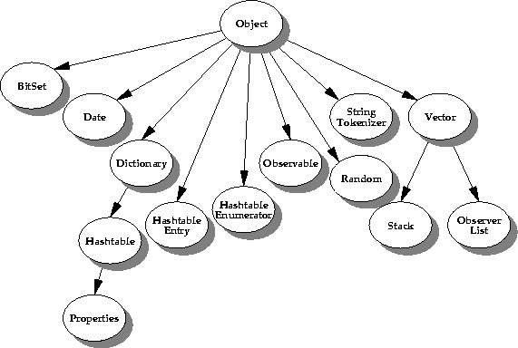

| CONTENTS | PREV | NEXT | The Java Language Environment |
The java.util package contains various utility classes including collection classes such as Dictionary and Vector. Here you'll find common storage classes such as HashTable and Stack, as well as special use classes like Date and Time and classes to handle encoder and decoder techniques. This picture illustrates the useful classes contained in the java.util package.